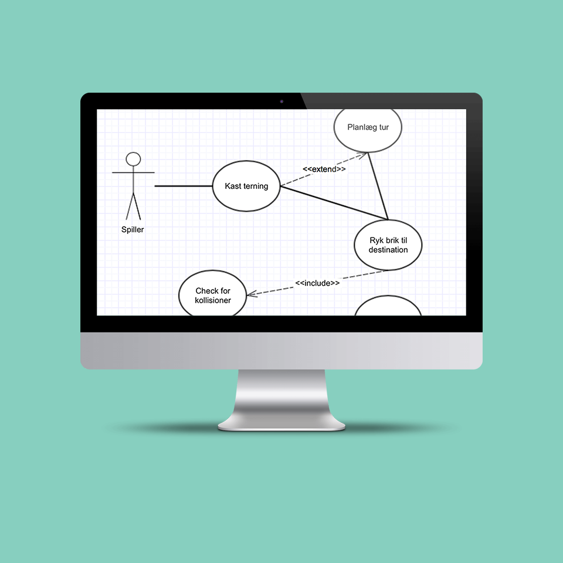

UML Use Case Diagram

Use case diagram lavet med et online UML værktøj
Proces
Dette er et forsøg på at lave et use case diagram for spillet LUDO. Målet var at få en forståelse for use case diagrammer ved hjælp af et simpelt eksempel.
Kritisk reflektion
Jeg fik en basal forståelse for UML og for use case diagrammer, hvordan de fungerer og hvorfor de anvendes.